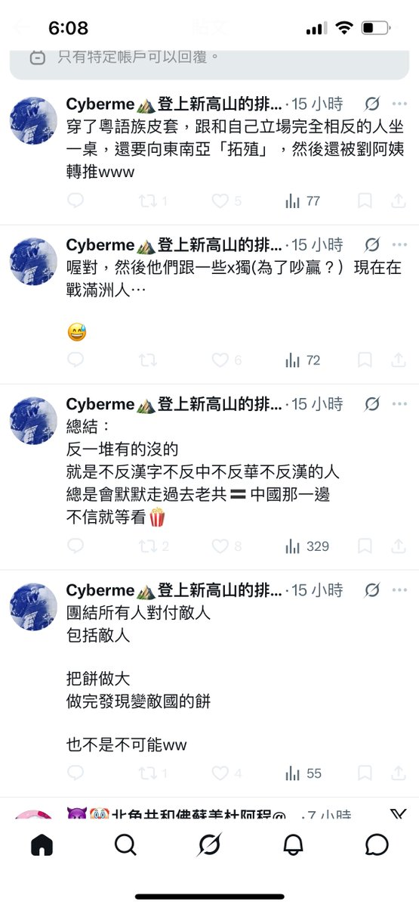
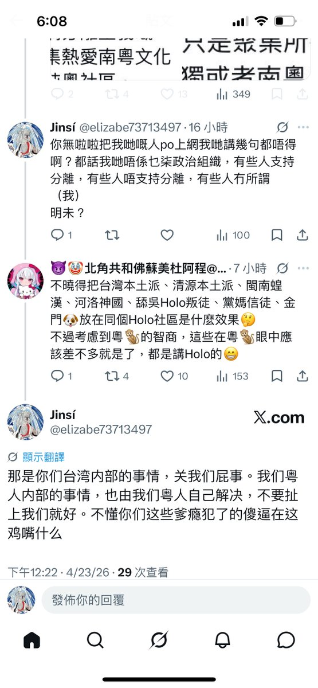
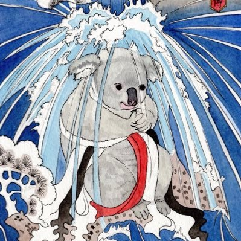

文芸🍁空白子🌸
@bungeikuhakushi
@elizabe73713497 @canton_ss 呢哋傻閪北角我早就拉曬嗰黑名單 我都懒得同呢班傻閪對線喇



Jinsí
@elizabe73713497
台譯粵：我哋台獨就係全亞洲乃至全世界獨派嘅老竇，所有有分離主義思想嘅人都要含我哋台灣撚，我哋唔撚鍾意漢字你哋就唔可以用漢字，我哋唔撚鍾意漢文化你哋就必須去漢化，如果唔撚含我哋台灣撚，你就係粵🐒、、閩🐒、吳越豚 https://t.co/7zxLxqrRKU https://t.co/upqSrYyym6